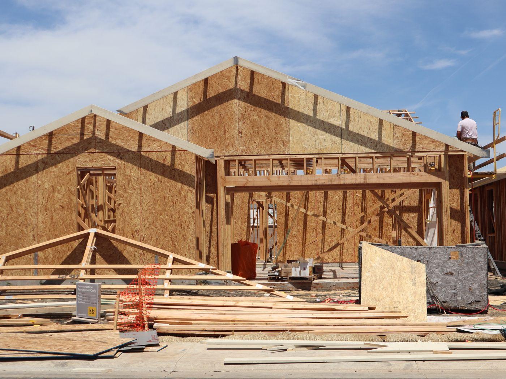
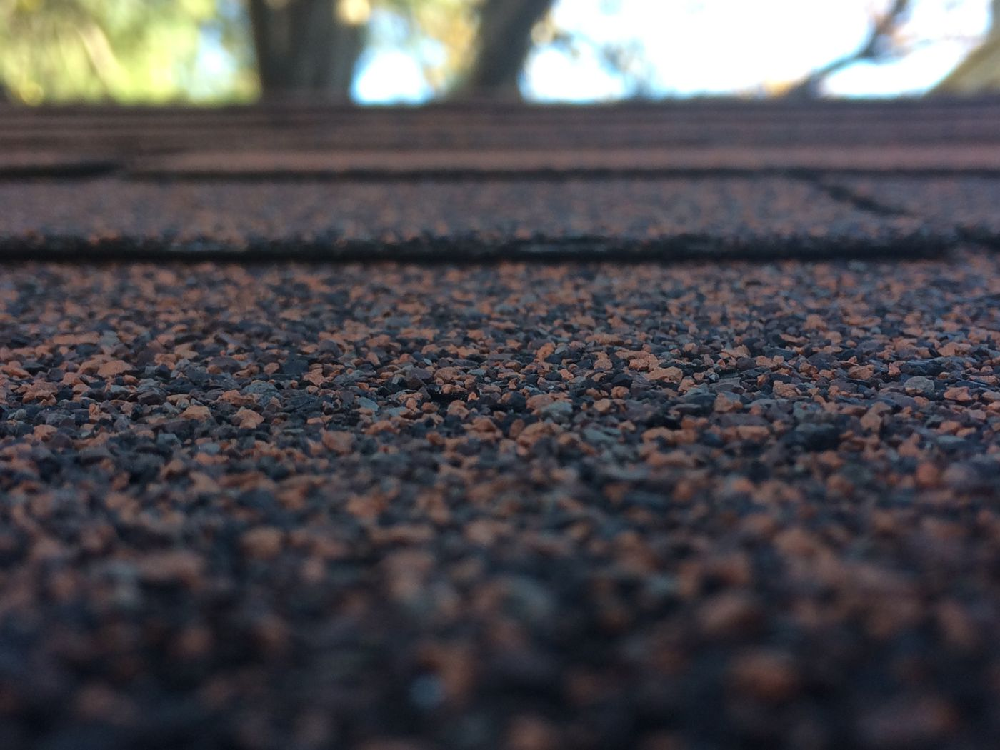
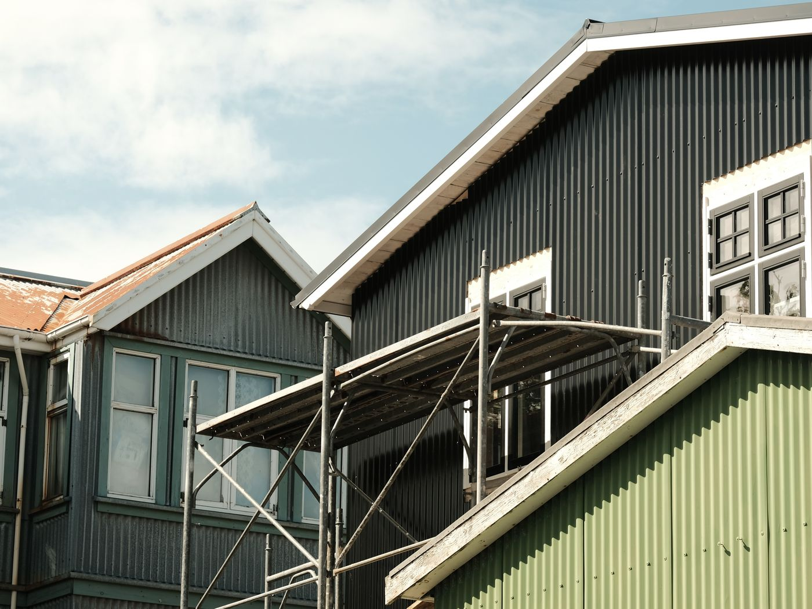
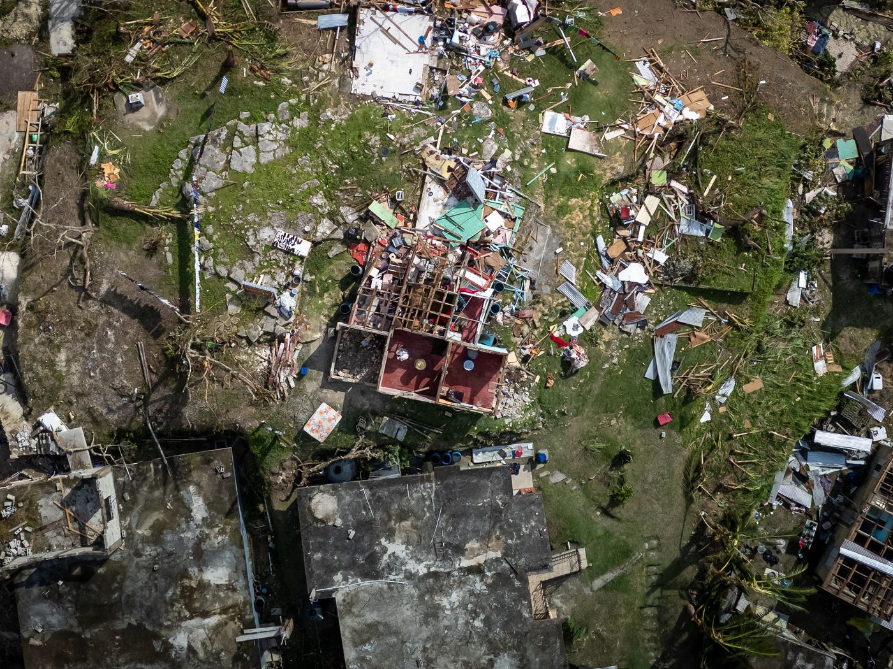
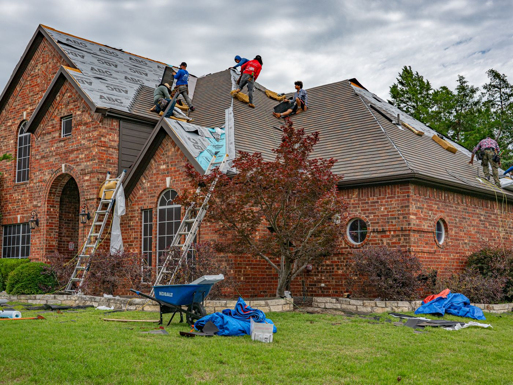
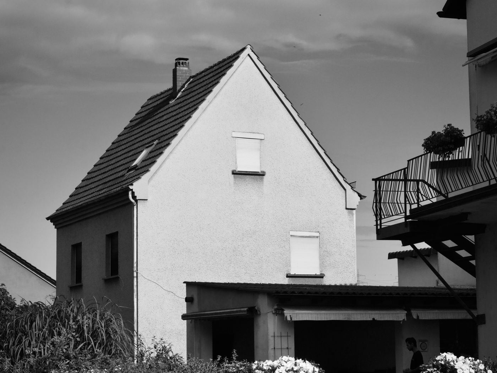

Leaks, missing shingles, storm damage, or a roof that has simply run out of years. We inspect it free, tell you straight, and do it once — properly.
Sample services — a real contractor's actual list drops straight in.
Full tear-off and rebuild. Architectural shingle, metal, or tile — with the underlayment done right, because that is the part that actually keeps water out.
We find where the water actually gets in, which is almost never where the stain is. Same-week appointments on active leaks.
Free documented inspection, photos your adjuster will accept, and we deal with the insurance company so you do not have to.
Seamless gutters, guards, fascia and soffit. Half the "roof leaks" we get called out to are really a gutter problem.
One bad night is the difference between a repair and a rebuilt ceiling.
Keep scrolling — the gallery glides. (These become the contractor's own job photos.)






Nailed to spec, sealed at every overlap. Boring, and that is the point.
The things homeowners ask about before they call anyone.
We photograph everything and show you. If it has five good years left, we will tell you that instead of selling you a roof.
Materials, layers, ventilation, flashing, and the price. One page, plain English, no line item called "miscellaneous".
Documentation your adjuster accepts, and we meet them on site. Most homeowners pay their deductible and nothing more.
Manufacturer warranty on the materials, our own on the workmanship. Both handed to you on the day we finish.
Rotten decking replaced, ridge capped, everything sealed. You sleep through the next one.
“Storm took half our shingles on a Sunday night. They tarped it Monday morning and the new roof was on inside two weeks.”
“Two other companies told me I needed a full replacement. These guys showed me photos and fixed the flashing for a few hundred dollars.”
“They dealt with the insurance company start to finish. I paid my deductible and that was it.”
Everything above is just how we get to this.
Often, if the damage came from a storm rather than age. The free inspection tells you either way, and we document it properly so the claim stands up.
Most single-family homes are a one to three day job once materials are on site. Weather is the only real variable.
Yes — monthly plans so a sudden roof does not have to be a sudden bill. We will show you the numbers before you commit to anything.
We come back and fix it, at no charge, under the workmanship warranty. That is the whole point of it being in writing.
Licence CCC-000000, and fully insured. Ask any roofer for both numbers before you let them on your property.
No charge, no pressure. We climb it, photograph it, and tell you honestly whether it needs a repair, a replacement, or nothing at all yet.